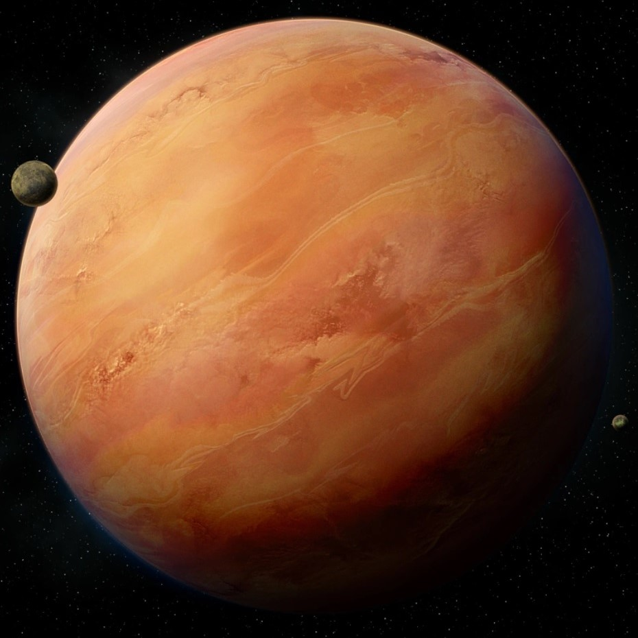
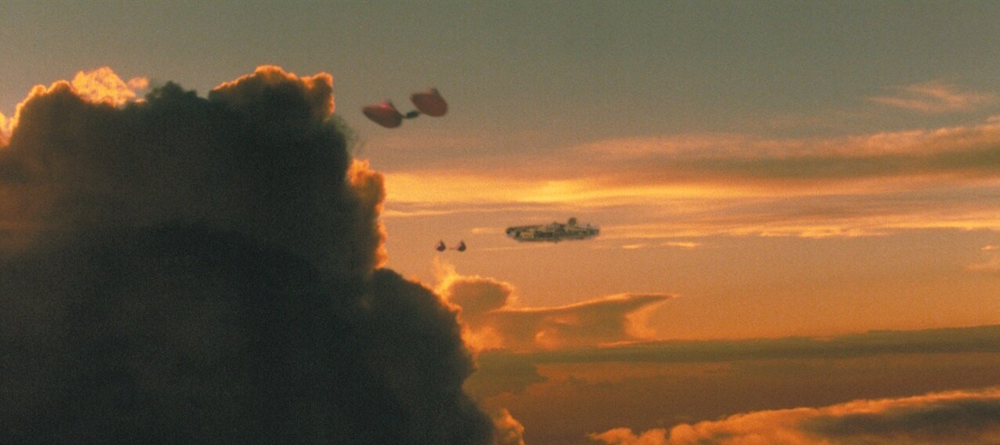
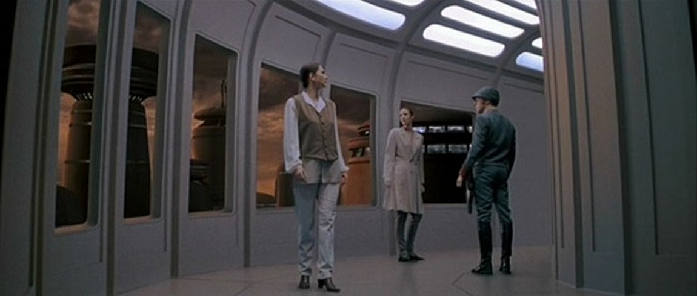
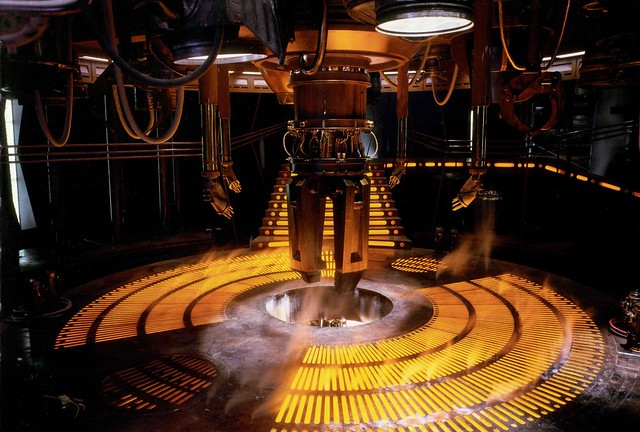

Bespin est une géante gazeuse située dans la Bordure Extérieure. Au-dessus de ses nuages flottent des cités suspendues, comme la célèbre Cité des Nuages, dirigée par Lando Calrissian. Connue pour ses mines de gaz tibanna, un précieux carburant pour les blasters et hyperdrives, Bespin est un lieu de commerce prospère mais aussi un refuge pour ceux qui cherchent à échapper aux regards de l'Empire.
|  |  |  |  |